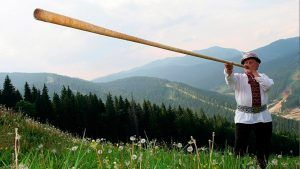
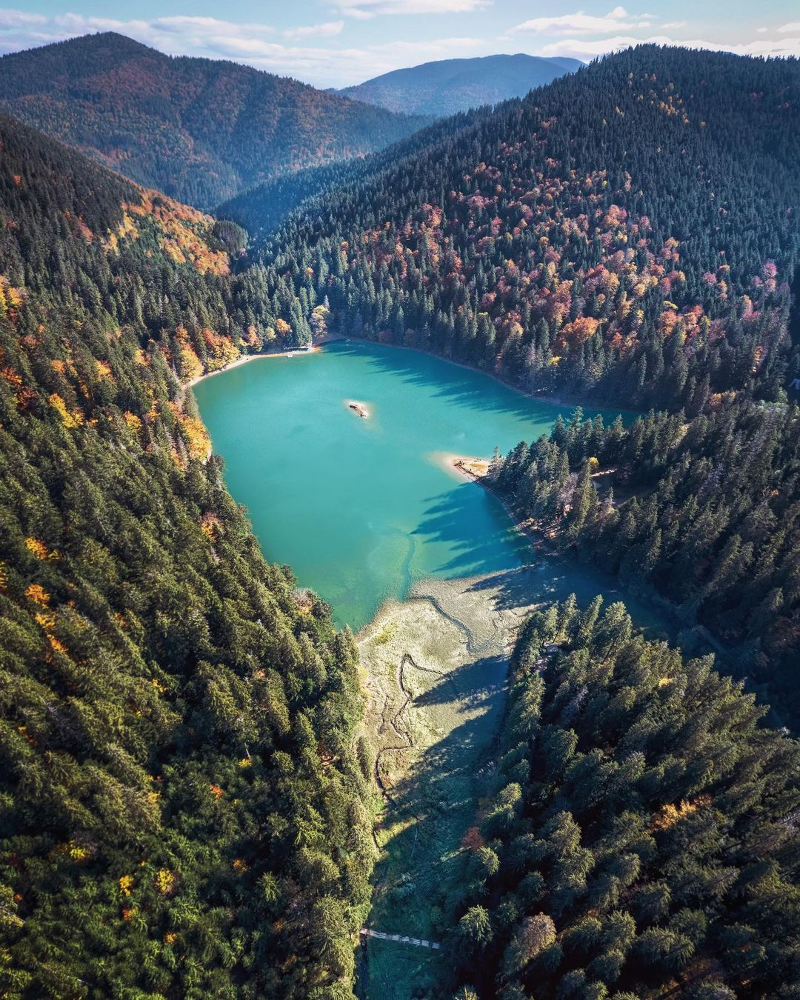
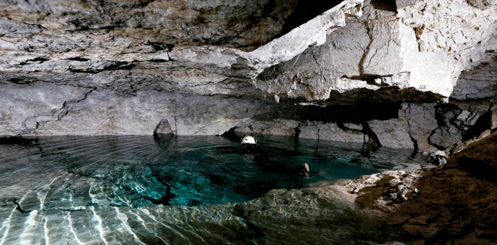
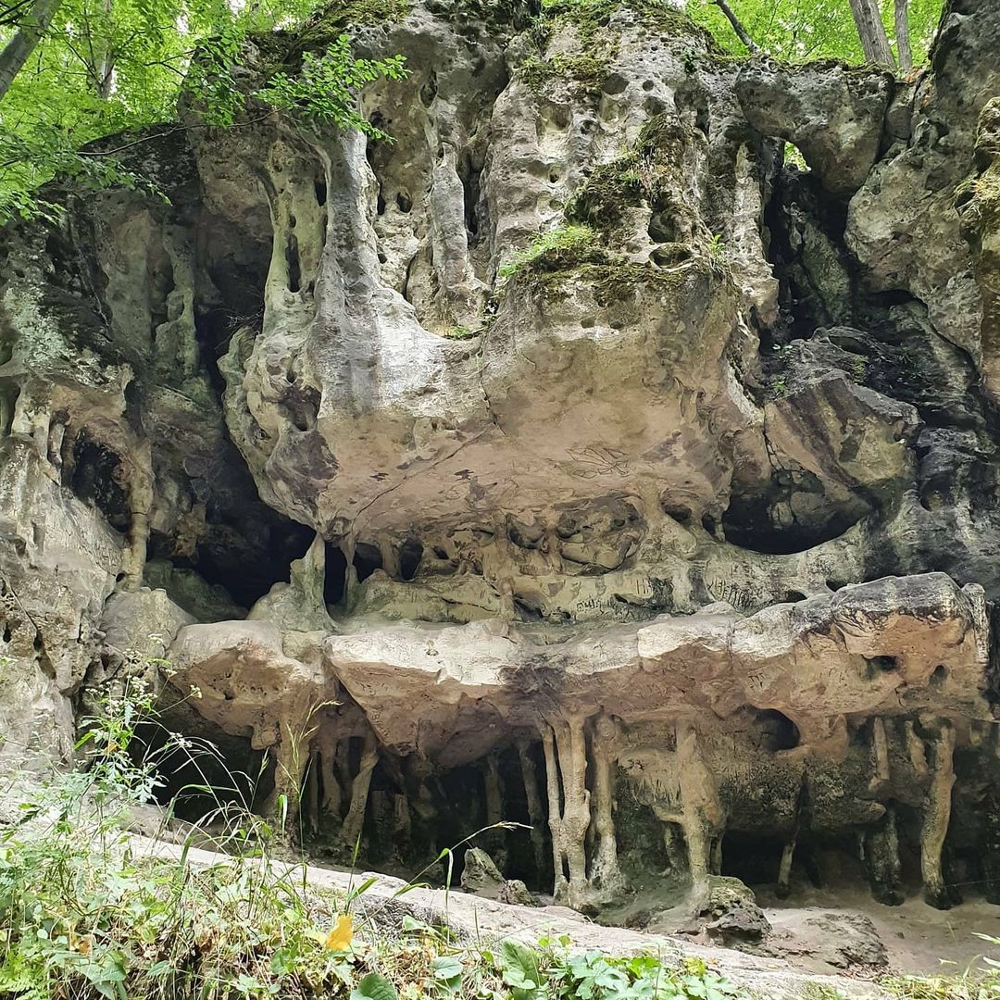

- Гімн України складається всього з шести рядків, а не чотирьох куплетів і двох приспівів. Другий, третій та четвертий куплети гімну, написаного поетом Павлом Чубинським і композитором Михайлом Вербицьким, не були затверджені в 2003 році.
- Автором першої в світі Конституції є українець Пилип Орлик. 5 квітня 1710 р. його обрали гетьманом запорізького війська. У цей же день він проголосив «Конституцію прав і свобод війська Запорізького». Для порівняння: у США Конституцію прийняли в 1787 р., у Франції та Польщі тільки в 1791 році.
- Український духовий інструмент трембіта — найдовший духовий музичний інструмент у світі. 
- В Україні, неподалік містечка Рахів, що на Закарпатті, знаходиться географічний центр Європи.
- Найдавніша, відома вченим мапа, а також найстародавніше поселення Homo Sapiens знайдені в Україні, у с. Межиріччя Рівненської області. Їм близько 14,5-15 тис. років. Мапу вибито на кістці мамонта.
- Серед яскравих досягнень українського літакобудування – найбільший в світі літак АН-225 “Мрія”, а також найпотужніший літак АН-124 “Руслан”. У 2001 році, літак “Мрія”, взявши на борт вантаж у 253 тонни, за один політ встановив 124 рекорди.
- Станція метро “Арсенальна” у Києві – найглибша в Україні і довгий час була найглибшою у світі. Вона знаходиться на глибині 105 метрів під землею. Станцію побудували однією із перших, у 1960-ому році, у безпосередній близькості від будівлі парламенту. За деякими даними, у тунелях біля “Арсенальної” є таємні сховища для політичної верхівки.
Дністровський каньйон
Найдовший в Україні Дністровський каньйон захоплює одразу чотири області: Івано-Франківську,
Хмельницьку, Чернівецьку та
Тернопільську. Його довжина 250 км.
Навколо річки є соснові та мішані ліси, природні заповідники та скелі девонського геологічного
періоду,
яким понад 400
мільйонів років.

Озеро Синевир
Синевир вважається одним із семи природних чудес України. Це найбільше за площею гірське озеро нашої країни, розташоване на висоті майже 1000 м над рівнем моря.Синевир вважається одним із семи природних чудес України. Це найбільше за площею гірське озеро нашої країни, розташоване на висоті майже 1000 м над рівнем моря. 
Оптимістична печера
Оптимістична печера розташована неподалік села Королівка на Тернопільщині. Мало хто знає, що це найдовша гіпсова печера у світі — її довжина сягає майже 260 км! Науковці зі всього світу з’їжджаються сюди, щоб дослідити її нескінченні лабіринти, підземні озера та мінеральні утворення. 
Грот Прийма
грот Прийма у Львівській області криє в собі артефакти, які доводять, що там були поселення неандертальців. За оцінками археологів, цій печері понад 45 тисяч років. 